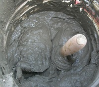
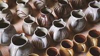

Our Policy
Quality products are created from top tier raw materials. That is why we work directly with our exclusive suppliers to obtain only the best materials shipped directly from the quarry.
The Clay

Our clay is batched mixed using industrial until a consistent texture and feel is achieved, it continues the process into the pug mill where the clay is de-aired and extruded into a block. Making our clay great anything from thrown pottery to sculpting.
The Slip

Our Slip process is mixed similar to our clay but additional water is added until the customer desired consistency is achieved. Making our slip great for any molding needs.
The Glaze

Our glazed are made to order to allow for customer based customizations, and a longer shelf life making our glazes stand out from our competitors.